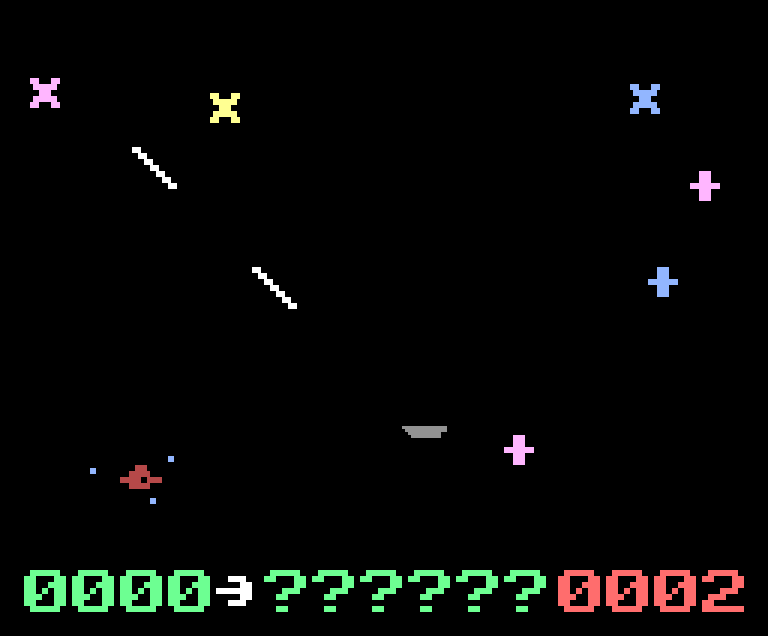
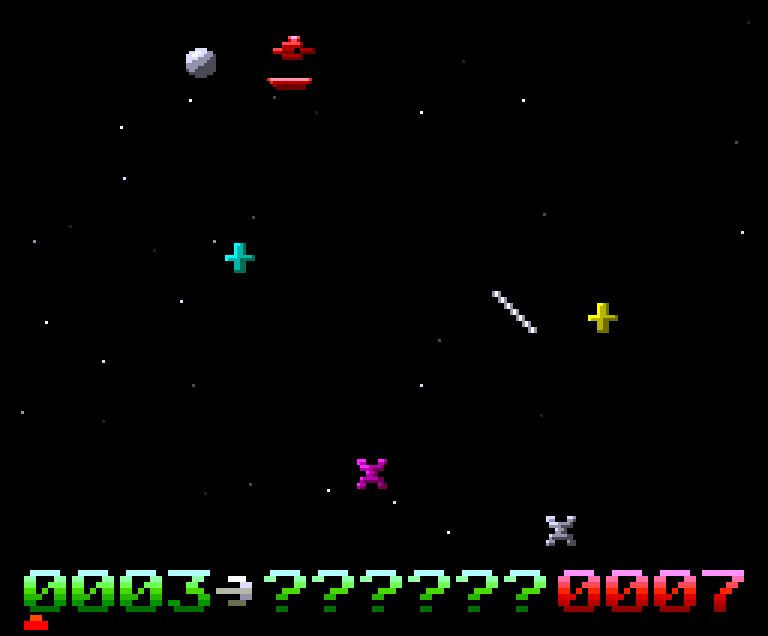
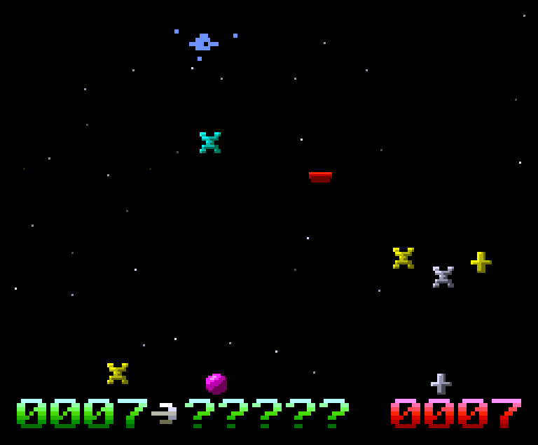

OVNI
O clássico do Odyssey (UFO!, no Magnavox Odyssey², 1981) refeito quadro a quadro no MSX2+. Eu adorava este jogo no Odyssey quando criança, então velocidades, desenhos e sons foram medidos em gravações do console, não feitos de memória.
- Dois jogos em um: o modo 0 é o original (SCREEN 5) e o modo 1 é o moderno, com sprites sombreados (SCREEN 8)
- O campo de força, as reações em cadeia e a morte da nave funcionam como no console
- O ronco grave do console sai bit a bit de uma interrupção de linha, com o PSG como DAC
- Máquina
- MSX2+
- Mídia
- ROM de cartucho, 32 KB · versão 4.6
- Controles
- setas movem · espaço atira · joystick na porta 1


